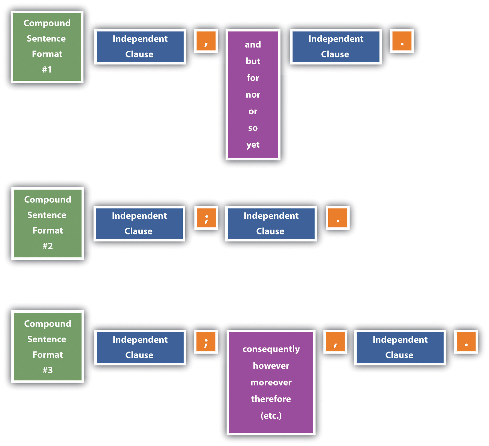

Two of the most common problems people have with compound sentences are comma splicesA sentence with two independent clauses joined by a comma instead of a semicolon or a comma followed by a coordinating conjunction. and fused sentencesA run-on sentence; a sentence with two independent clauses joined without punctuation.. The key to understanding these problems is to recognize the possible compound sentence formats:
Figure 18.1
Two different situations can result in comma splices.
Problem: A comma joins independent clauses instead of the clauses being joined by a comma followed by a coordinating conjunction.
Example: Her name was Jean Louise Finch, she wanted everyone to call her “Scout.”
Correction: Her name was Jean Louise Finch, but she wanted everyone to call her “Scout.”
Problem: A comma joins two independent clauses when a semicolon should be used.
Example: Atticus didn’t want Scout to fight, however, she could not ignore injustices.
Correction: Atticus didn’t want Scout to fight; however, she could not ignore injustices.
A fused sentence is also called a run-on sentence and occurs when two independent clauses are joined without any punctuation.
Mr. Cunningham is very poor he cannot pay Atticus for legal services.
Correction option 1: Add a coordinating conjunction and a comma: Mr. Cunningham is very poor, so he cannot pay Atticus for legal services.
Correction option 2: Place the independent clauses into two separate sentences: Mr. Cunningham is very poor. He cannot pay Atticus for legal services.
Correction option 3: Place a semicolon between the two clauses: Mr. Cunningham is very poor; he cannot pay Atticus for legal services.
Correction option 4: Place a semicolon between the two clauses, and use a conjunctive adverb for further clarification: Mr. Cunningham is very poor; therefore, he cannot pay Atticus for his legal services.
Correction option #5: Turn one of the independent clauses into a dependent clause: Mr. Cunningham cannot pay Atticus for his legal services because he is very poor.
OR
Because he is very poor, Mr. Cunningham cannot pay Atticus for his legal services.
Read each compound sentence. Identify each as correctly written, a comma splice, or a fused sentence. For the comma splices and fused sentences, write a corrected version.
Write three different versions of a correctly punctuated compound sentence made up of the following pairs of independent clauses, using each of the three formats described in this section (comma plus coordinating conjunction, semicolon only, and semicolon plus conjunctive adverb). Then write a comma splice and a fused sentence using the same pair of independent clauses. Finally, make one of the clauses dependent on the other, use a subordinating conjunction (see Chapter 16 "Sentence Style", Section 16.3 "Using Subordination and Coordination"), and punctuate the sentence accordingly.